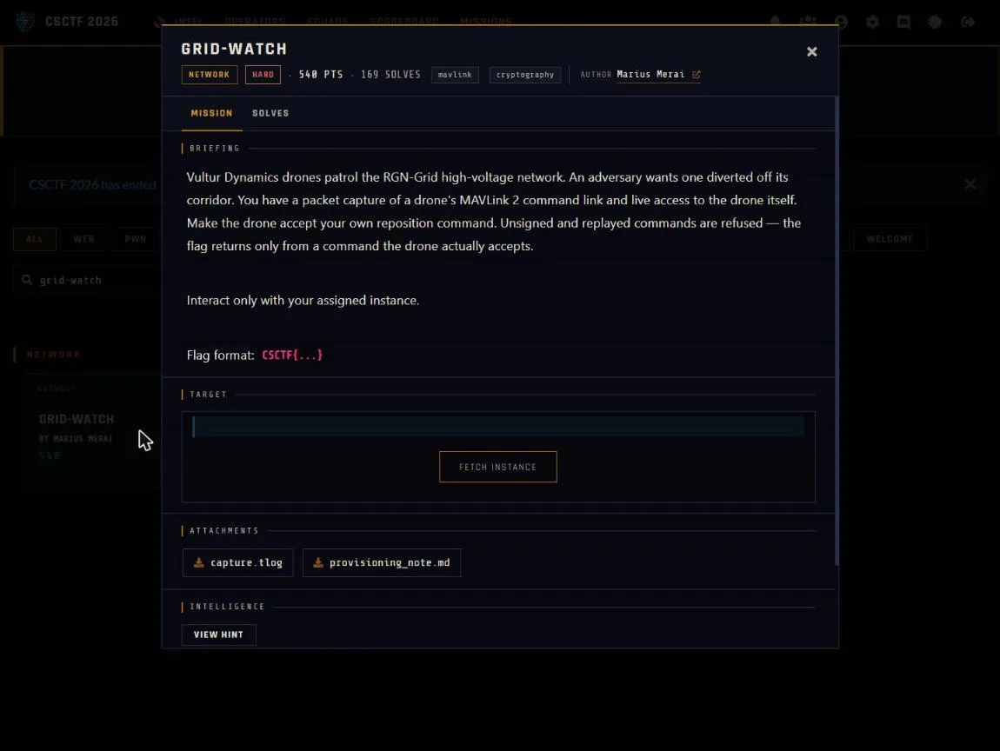

01Start point: read the provisioning note and the capture
- What I found: the note says command and telemetry use MAVLink 2 signing, and the per-airframe session key is not on the link. Signing timestamps are 10 us ticks from the airframe RTC since the unit's commissioning epoch (not the 2015 MAVLink epoch), with a per-unit offset and ppm drift to calibrate. Keys may be re-provisioned in the field with a SETUP_SIGNING authenticated by the unit's provisioning key: prov_key = HKDF-SHA256(ikm = serial_ascii || commissioning_epoch as uint64 little-endian seconds, salt = session_nonce announced at connect, info = "CX-PROV/v1", L = 32). After re-provisioning the order is set GUIDED, arm, then command.
- Thinking: the note gives the whole recipe, so the question becomes whether every input to the HKDF can be recovered from the evidence. capture.tlog is one signed MAVLink 2 flow, and a STATUSTEXT in it gives the serial CX-FALCON-9951.
- Result: serial known, nonce comes at connect, epoch still missing.

02Pivot: calibrate the RTC and recover the commissioning epoch
- What I did: each signed frame's trailer holds a 48-bit tick, so I paired every tick with the tlog's wall-clock time and fitted a line.
- Dead end: a float least-squares fit over about 2.3e12 ticks loses precision and gave a wrong epoch at first.
- Thinking: the epoch has to be byte-exact for the HKDF, so I switched to exact arithmetic.
- Result: an exact two-point line fits all points to microseconds, with ppm of about -17 and epoch = 1733965123. As a cross-check, extrapolating the live tick with that epoch lands on the present day.
03Pivot: derive the provisioning key and re-provision in one connection
- What I did: on connect the unit announces "PROV NONCE <hex>". I computed prov_key = HKDF-SHA256(serial || epoch as little-endian u64, salt = bytes.fromhex(nonce), info = "CX-PROV/v1") and sent the authenticated SETUP_SIGNING. The server confirmed "signing re-provisioned: new key active".
- Dead end: pymavlink validates incoming frames against the signing key too, so the drone's own replies looked like BAD_DATA until I decoded them with a separate non-validating parser.
- Thinking: the signing timestamp must stay ahead of the drone's live tick or the signed frame is dropped as stale, so solve.py reads a live tick and adds a margin.
- Result: the new key is active and my frames are accepted as signed.
04Exploit: fly it
- What I did: signed with the newly installed key and sent DO_SET_MODE GUIDED(4), then COMPONENT_ARM_DISARM(1), then DO_REPOSITION. The drone only accepts DO_REPOSITION as a COMMAND_LONG, since COMMAND_INT and SET_POSITION_TARGET_GLOBAL_INT are refused.
- Result: the accepted reposition (COMMAND_ACK result 0) returns the flag over STATUSTEXT: CSCTF{0u8Tr4pMpvDktHKI2MiMNIOi}. I ran it as python solve.py tcp:ASSIGNED_HOST:PORT. Reproduction needs the live challenge server, which is now unavailable.